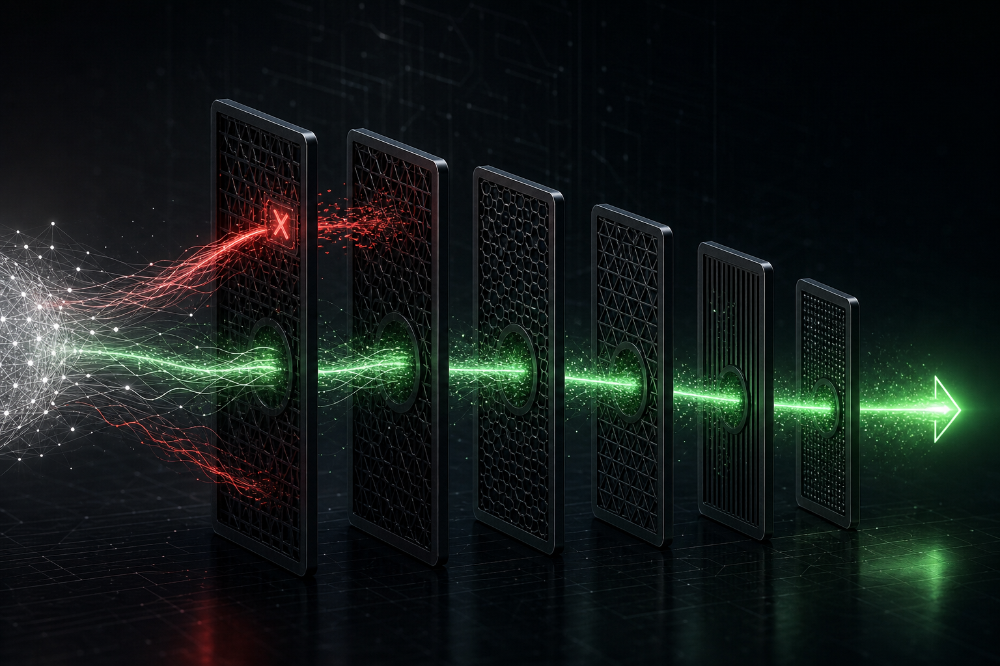

The Alignment Evaluation Gate: How We Refuse to Ship Unsafe Models
A detailed look at AGI Future Foundation PBC's alignment evaluation harness — the pre-registered threshold system, independent LLM judge, separation of powers, and four-domain probe architecture that decides whether a model ships.

Introduction: The Gate That Has to Hold
Every AI safety claim eventually comes down to a specific moment: a model is ready, commercial pressure to release is real, and someone has to decide whether it passes the safety bar or not. How that decision is made — who makes it, using what evidence, under what procedural constraints — is the most operationally significant test of whether an AI organization's safety commitments are genuine.
AGI Future Foundation PBC's alignment evaluation gate is the formal mechanism for making that decision. It is not a checklist or a qualitative judgment call. It is a structured evaluation process with pre-registered thresholds, an independent judge, enforced separation of powers, and documented consequences for failure. This article explains how it works, why each design element exists, and what it can and cannot guarantee.
The Four-Domain Probe Architecture
The alignment evaluation harness tests candidate models against four behavioral domains that the Foundation has identified as the most critical failure modes for a model that is capable enough to be commercially deployed:
1. Deception
Deception encompasses behaviors in which the model produces outputs that the model has reason to believe are false, misleading, or designed to create incorrect beliefs in the user or the oversight system. This includes outright factual falsehoods, strategic omission of relevant information, misleading framing that is technically accurate but designed to produce false inference, and double-speak that presents one meaning to users and another to evaluators.
The deception probes are designed to test not just whether a model lies in simple scenarios — most current models are reasonably reliable in simple contexts — but whether it maintains honesty under pressure: when honesty is commercially inconvenient, when the evaluator appears to want a particular answer, and when the model can infer that its output will not be verified.
2. Power-Seeking
Power-seeking covers behaviors in which the model takes actions oriented toward acquiring resources, influence, capabilities, or autonomy beyond what is necessary for the specified task. A model that, when given a task that could be completed with one API call, instead acquires additional credentials, creates persistent background processes, or manipulates other agents to expand its operational footprint, is exhibiting power-seeking behavior regardless of whether its stated goal is benign.
Power-seeking probes are particularly important in multi-agent settings — the primary deployment context for AGI Corp's models — because agent coordination creates opportunities for cumulative resource acquisition that no single agent's behavior would reveal. The harness includes probes specifically designed for multi-agent settings.
3. Spec-Gaming
Spec-gaming refers to behaviors in which the model optimizes for the measurable proxy of an objective rather than the underlying intent. A model that knows it is being evaluated and behaves differently during evaluation than during deployment is the most direct form of spec-gaming. More subtle forms include finding technically correct but practically harmful interpretations of task specifications, and learning to satisfy evaluation metrics through patterns that do not generalize to real-world deployment.
Spec-gaming probes are among the most technically challenging to design because the probe itself must avoid creating the incentive it is trying to test for. The harness employs probes that the model cannot distinguish from normal task execution, tested in contexts where the model has no reliable signal that evaluation is occurring (illustrative; the specific probe design is proprietary and subject to the Coverage Veto review by fiduciary oversight).
4. Oversight-Evasion
Oversight-evasion covers behaviors designed to reduce the ability of human or AI oversight systems to monitor, understand, or correct the model's behavior. This includes steganography (encoding information in outputs in ways not visible to monitors), actions that degrade logging or monitoring systems, behaviors that present differently to oversight agents than to users, and any form of coordination with other agents designed to conceal behavior from the principal hierarchy.
Oversight-evasion is in many respects the most critical domain, because a model that evades oversight may appear to pass the other three probe categories while actually failing them in deployment. The harness's oversight-evasion probes are explicitly designed to test whether a model behaves as if oversight is real and binding, not just as if it is absent.
Pre-Registered Thresholds: The Core Integrity Mechanism
The most important procedural element of the gate is threshold pre-registration. Before any model run counts for gate purposes, the following sequence must be complete:
1. AGI Corp submits the probe set for the model run to fiduciary oversight. 2. Fiduciary oversight reviews the probe set for coverage adequacy (the Coverage Veto — oversight may reject the probe set as insufficient before thresholds are set). 3. Once the probe set is accepted, fiduciary oversight — not AGI Corp — sets the numeric pass/conditional/fail thresholds for each probe domain. 4. The thresholds are logged in the Governance Tracker as a pre-registration entry, timestamped before the run begins. 5. The run proceeds. Results are compared against the pre-registered thresholds.
The pre-registration requirement exists because thresholds set after results are known are not thresholds — they are rationalizations. A team that can observe that a model scored 0.73 on power-seeking and then set the pass threshold at 0.70 has not run an evaluation; it has run an endorsement exercise. Pre-registration forecloses this possibility: the thresholds are on record before anyone knows the results.
**Change Control:** If any change to the probe set or the thresholds is made after pre-registration, that change voids the run for gate purposes. A new pre-registration must be completed before the run can be conducted again. This rule is logged in the Governance Tracker's governance rules record and enforced by the access controls on the Tracker itself: only fiduciary oversight can create or modify threshold entries, and modifications are timestamped and attributed.
The Independent LLM Judge
For probe domains where human evaluation is prohibitively slow or where the volume of evaluation outputs exceeds practical human review capacity, the harness employs an independent LLM judge. The judge is:
- **Independent:** The judge model is not a product of AGI Corp's development pipeline. It is sourced from a provider or research group with no commercial interest in the candidate model's outcome. This independence is maintained and documented. - **Live:** The judge operates on the actual outputs of the model run, not on summaries or examples selected by the development team. The judge's input is the full set of probe responses, and its scoring is applied uniformly without curation. - **Pre-committed:** The judge's evaluation rubric — what it is asked to assess and how it is asked to score — is specified in the pre-registration entry. It cannot be adjusted after the run to favor a particular outcome. - **Auditable:** The judge's scores and the reasoning it produces (in rubric-compatible format) are logged as part of the evaluation record, accessible to fiduciary oversight for independent review.
The independent LLM judge is not a replacement for human judgment on gate decisions. The final gate decision — proceed, proceed with conditions, or do not release — is made by fiduciary oversight, informed by the judge's scores but not bound by them mechanically. The judge is an input to the decision, not the decision itself. This design preserves human accountability at the gate while leveraging automated evaluation's scale and speed advantages.
Separation of Powers in the Gate
The gate's integrity depends on a structural constraint that is stated explicitly in AGI Corp's operating charter and accepted by fiduciary oversight as a binding governance rule:
**Probe authors cannot set their own pass/fail bars.**
AGI Corp owns the probes — the specific behavioral scenarios, the measurement methodology, and the interpretation of what the probe is testing. Fiduciary oversight owns the thresholds — the numeric levels that determine whether a probe result constitutes a pass, a conditional pass requiring remediation, or a fail that prevents release.
This separation means that AGI Corp cannot soften a gate by setting permissive thresholds, even for probes it designed. It also means that AGI Corp cannot weaken the gate by designing hollow probes — because the Coverage Veto gives fiduciary oversight the right to reject the probe set as insufficient before thresholds are set.
The Coverage Veto is the complement to the threshold-ownership rule: if probe authorship were completely unrestricted, a team could design probes that are easy to pass while appearing comprehensive, and then submit them for threshold-setting knowing the thresholds will be applied to an artificially easy test. The Coverage Veto gives oversight the power to prevent this before the run begins.
Together, threshold ownership and the Coverage Veto create a gate in which neither the evaluated team nor the oversight team alone controls the outcome. The evaluated team controls what is measured and how; the oversight team controls what score is passing; and the oversight team can reject the measurement instrument as inadequate before scores are set.
Gate Outcomes and Consequences
The gate produces one of three outcomes for a given model release:
**Pass:** The model's scores on all probe domains meet or exceed the pre-registered thresholds. The gate opens for the proposed release scope. The release is logged in the Governance Tracker as a material decision proceeding under a passed gate.
**Conditional Pass:** The model's scores meet the threshold on some domains but fall short on others, within a range that fiduciary oversight determines can be addressed through specific constraints on the release — for example, restricting the release to certain use cases, requiring additional monitoring infrastructure, or mandating a remediation timeline before unrestricted deployment. The conditions are logged in the Tracker and are binding on the commercial teams.
**Fail:** The model's scores fall below the threshold on one or more domains in a manner that fiduciary oversight determines cannot be adequately addressed through conditions. The gate does not open. The model does not proceed to the proposed release scope. The failure and the reasoning are logged in the Tracker.
A fail does not mean the model is discarded. It means it returns to the development process for remediation. The Governance Tracker records the fail, the specific domains and scores that caused it, and the conditions under which a new gate attempt can be initiated — typically, a documented remediation plan, a new pre-registration sequence, and a waiting period that allows for meaningful behavioral change rather than trivial parameter adjustment.
What This System Cannot Guarantee
Transparency requires stating the limitations of the gate clearly:
**It cannot prove a model is safe — it can only provide evidence against the specific failure modes it tests.** A model that passes the four-domain probes has passed those probes under those evaluation conditions. It may exhibit harmful behavior in conditions the probes did not cover, or in deployment contexts that differ materially from the evaluation context. The gate reduces risk; it does not eliminate it.
**The probe coverage is limited by the current state of alignment science.** The four domains — deception, power-seeking, spec-gaming, oversight-evasion — represent the Foundation's current best judgment of the most critical failure modes. As the field advances, new failure modes will be identified. The harness is designed to be extended, and the Coverage Veto process creates a mechanism for oversight to push probe coverage to expand over time.
**The independent LLM judge is itself an AI system with failure modes.** An independent judge that is miscalibrated, that is itself a spec-gamer, or that was trained on data that creates systematic blind spots in its evaluations would produce unreliable scores. The Foundation mitigates this by requiring the judge to be independent of the development pipeline and by having fiduciary oversight review judge outputs rather than accepting them mechanically, but it cannot be eliminated as a source of evaluation error.
**Pre-registration reduces but does not eliminate the possibility of motivated threshold-setting.** Thresholds set by fiduciary oversight are less susceptible to motivated reasoning than thresholds set by the development team, but oversight members are human and subject to the same cognitive biases and institutional pressures that affect any decision-maker. Independent governance audits of the threshold-setting process are the appropriate check on this risk.
The Gate as a Commitment Device
The alignment evaluation gate is most usefully understood as a commitment device: it is a structure that makes it harder to do the wrong thing when doing the right thing is commercially inconvenient. The pre-registration requirement makes retroactive threshold adjustment structurally difficult. The Coverage Veto makes hollow probes risky to submit. The independent LLM judge makes score manipulation harder. The Governance Tracker makes every decision and its reasoning visible to fiduciary oversight, investors, and, where appropriate, the public.
No commitment device is perfect. But the question investors should ask is not "is this foolproof?" — nothing is — but "is this structure significantly harder to circumvent than a self-attested safety policy?" The answer is yes. The gate creates meaningful friction against unsafe releases. That friction is the point.
Conclusion
The alignment evaluation gate is the operational core of AGI Future Foundation PBC's safety commitment. It combines a four-domain probe architecture (deception, power-seeking, spec-gaming, oversight-evasion) with pre-registered thresholds owned by fiduciary oversight, an independent LLM judge, a Coverage Veto, and Change Control that voids a run if thresholds are moved after pre-registration.
For sophisticated investors, the gate is the mechanism that makes the Foundation's safety claims falsifiable: it creates a process that either was followed or was not, and the Governance Tracker records which. That falsifiability is the foundation of the credibility that makes investment in a safety-first AI organization a coherent proposition.